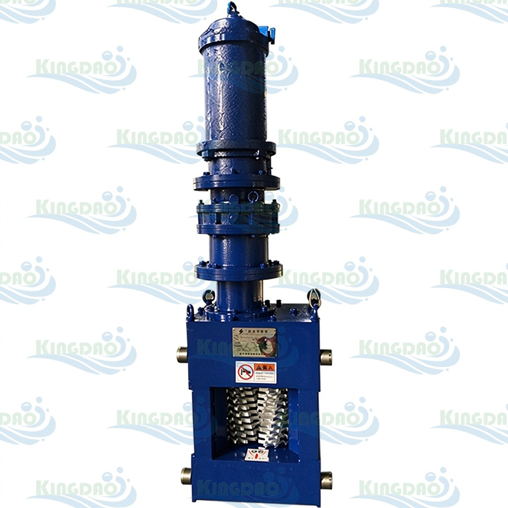

A tubular grille is bolted into the rising main or the pump inlet. Flow passes through it, the twin shafts cut what arrives, and the pump downstream never sees a rag. There is no channel, no civil works, and no separate conveyor.
Flanged directly into the pipeline, DN50 to DN400, 40 to 300 m³/h. Twenty-one models.
Pump-inlet version that mounts on the suction side. 40 to 800 m³/h, eighteen models.
The pipe is the installation. Nothing to cast, nothing to drain.
The solids are cut, not raked — so there is no screenings bin, no conveyor and no smell.
Looking for the open-channel version? The PZG / PZGD rotary drum crushing grille sits in a channel rather than a pipe, 250 to 6,900 m³/h. See Channel Grille
Installed in the pipe run, not in a channel — the cutter stack sits in the flow and the motor on top.

A crushing grille — also called a macerator, grinder or comminutor — shreds the solids carried in wastewater into small particles instead of lifting them out. Everything downstream runs better: pumps stop blocking, the filter press stops being damaged by solids, pipelines stop plugging, and there is no raking labour and no screenings to dispose of.
Use: installed in a pipeline, typically ahead of a sludge pump or a filter press, or in a chemical plant where lumps in the liquid have to be broken up to protect pipework and the next item of equipment.
Installation: flange connection, JB/T81-94, PN0.25 MPa. Bore and flange size can be customised to the site; 21 models cover DN50 to DN400 and 40 to 300 m³/h.
Use: installed directly in the channel, or inside an FRP prefabricated pumping station in place of the basket screen. It replaces the traditional basket screen and cuts the labour of manual raking, while removing the risk of the pump being blocked by screenings carried past it.
Single or double drum: the drum is driven by its own motor on the multi-motor design, which lowers the energy consumption of the crushing section and simplifies motor commissioning. Single-drum models cover 900–3,000 m³/h; double-drum covers 2,400–6,900 m³/h.
Both series can be supplied with an intelligent electric control cabinet. On blockage the unit reverses automatically to clear the obstruction, up to three attempts; if it is still blocked, the cabinet cuts the motor supply and raises a visual or audible alarm. Motor IP55 as standard, IP67/IP68 available (these will run submerged or in air), explosion-proof and high-altitude motors on request. Stainless steel or other blade materials can be specified.
21 models, DN50 to DN400. A = 100/200/300/400 mm and H = 1100/1200/1300/1400 mm by series; B = 360 mm and D = 240 mm across all models.
| Model | Capacity m³/h | Bore (in / out) | Motor kW |
|---|---|---|---|
| PG-10-50/50 | 40 | DN50 | 1.5 |
| PG-10-80/80 | 50 | DN80 | 1.5 |
| PG-10-100/100 | 56 | DN100 | 1.5 |
| PG-10-150/150 | 56 | DN150 | 1.5 |
| PG-20-50/50 | 70 | DN50 | 2.2 |
| PG-20-80/80 | 80 | DN80 | 2.2 |
| PG-20-100/100 | 90 | DN100 | 2.2 |
| PG-20-150/150 | 100 | DN150 | 2.2 |
| PG-20-200/200 | 110 | DN200 | 2.2 |
| PG-20-250/250 | 110 | DN250 | 2.2 |
| PG-30-100/100 | 160 | DN100 | 2.2 |
| PG-30-150/150 | 170 | DN150 | 2.2 |
| PG-30-200/200 | 180 | DN200 | 2.2 |
| PG-30-250/250 | 190 | DN250 | 2.2 |
| PG-30-300/300 | 200 | DN300 | 2.2 |
| PG-30-350/350 | 200 | DN350 | 2.2 |
| PG-40-200/200 | 250 | DN200 | 2.2 |
| PG-40-250/250 | 270 | DN250 | 2.2 |
| PG-40-300/300 | 280 | DN300 | 2.2 |
| PG-40-350/350 | 290 | DN350 | 2.2 |
| PG-40-400/400 | 300 | DN400 | 2.2 |
Flange dimensions to JB/T81-94, PN0.25 MPa. Bore and flange sizes can be customised.
The details below are the ones that decide whether a grinder survives a pumping station: blade metallurgy, shaft support, seal arrangement and what can be replaced on site.
Single body, single drive. The cutter assembly and the rotary drum share one gearbox and one motor — it is one machine, not a combination of separate units bolted together. Twin shafts run at differential speed, and the motor is rated for dry and submerged duty: IP68, insulation class H.
Blades that can be replaced individually. Cutter blades and spacers are separate pieces mounted alternately on two parallel shafts, producing a helical cut. Blade-to-spacer clearance on both shafts is 2–4 mm, which is what fixes the shredded particle size at 6–12 mm. Because each blade and spacer is a separate item, a worn blade is changed on its own rather than replacing a shaft assembly.
Shafts and support. Drive and driven shafts are 4140 hardened hex alloy steel. Where the cutting section is longer than 1,000 mm, a support is added every 500 mm along the shaft — this is what protects the bearings and the mechanical seal on the wide models.
Seal arrangement. Bearing and mechanical seal sit together in a single sealed cartridge, which is the reason the seal life holds up in wet wells where conventional arrangements fail.
Rotary drum. The drum is built from 8 mm stainless steel rings stacked horizontally rather than vertical bars — stronger, and it feeds captured solids back into the cutting zone. Ring gap 10 mm, material SS304.
| Component | Material / make |
|---|---|
| Cutter blades and spacers | 3Cr13 hardened alloy steel, 11-tooth blade |
| Shafts (drive and driven) | 4140 hardened hex alloy steel |
| Base frame and housing | Epoxy-coated carbon steel |
| Side rails | Epoxy-coated carbon steel |
| Bearings | NSK |
| Mechanical seal | Specialist seal supplier, cartridge type |
| Rubber parts | Nitrile rubber (NBR) |
| Drum screen | Stainless steel 304, 8 mm rings |
| Motor and reducer | Major Chinese motor works or equivalent, direct-coupled |
Independent control panel, 3–4 kW, 380 V / 3-phase / 50 Hz, IP55, stainless steel 304 enclosure.
OFF / RESET / AUTO. In AUTO the machine is switched by a remote signal or a timer; OFF and RESET stop it for maintenance.
On blockage the controller stops the machine and reverses it to clear the obstruction, up to three attempts within 30 seconds. If it is still blocked after the third attempt, the motor supply is cut and a fault lamp is set.
Overload relay and leakage sensor on the motor; short-circuit protection by a correctly sized breaker or fuse. After a power failure the machine requires a deliberate restart.
Scope of supply: complete crushing grille with submersible motor, underwater cable, control panel, all fasteners, connections and anchor bolts. Overflow screen and inspection screen available as options. Overflow and inspection screens, frames and supports in stainless steel 304.